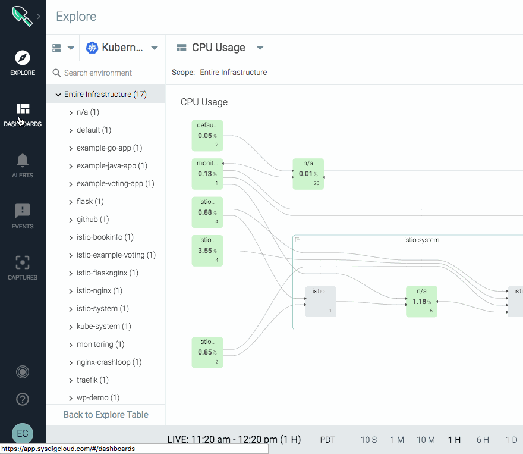
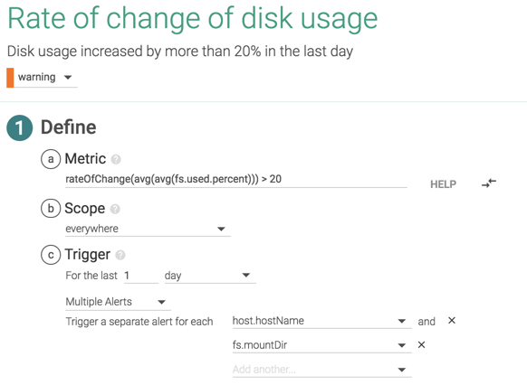
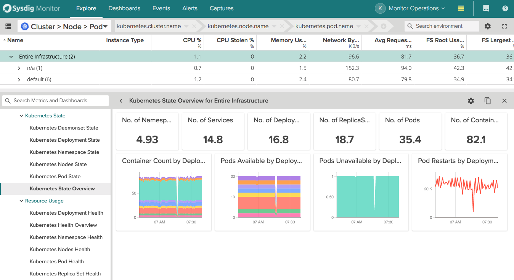
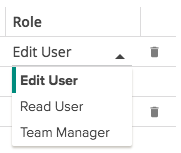

Sysdig On-Premises Release Notes
Warning
It is highly recommended to follow upgrade best practices:
Keep upgrades current
Upgrade progressively without skipping versions, and
Test upgrades in a non-mission-critical or staging environment before rolling into production.
Release 2.3.0, July 29, 2019
Upgrade Process
Review the Migration Path tables in On-premise Upgrades.
Supported upgrade paths: 1929, 2435.
Important Note for Kubernetes Upgrades
Due to the new Secure Elasticsearch and Cassandra feature, Kubernetes installations must follow an Expanded Upgrade process.
Warning
This version of Sysdig On-Premise requires Elasticsearch to be at 5.6.x, which is done automatically when you follow the Expanded Upgrade process.
If you are running your own instance of ES, you will need to update it to 5.6.x.
Replicated Upgrades
For Replicated installations, the upgrade instructions are here: Upgrade Replicated Installations.
Sysdig Platform
Option to Secure Elasticsearch and Cassandra (Kubernetes only)
It is now possible to secure Elasticsearch and the Cassandra DB with password authentication and/or SSL/TLS protection. See Securing Elasticsearch and Securing Cassandra for details.
Sysdig Monitor
Enhanced Dashboard Menu
The Dashboard menu features a drawer-style popover that displays on-demand to provide maximum real estate for your Dashboards. The menu displays an alphabetical list of Dashboards you own and those shared by your team. With the popover menu, you can add new Dashboards and search for existing ones. Click a Dashboard name to access the relevant Dashboard page where you can continue with the regular Dashboard settings.
 |
Customize Alert Notification Template
Sysdig Monitor alerts now provide an option to customize the messages that are sent with alert notifications in email and other channels, such as Pagerduty and Webhook.
Use the Alert Editor to input dynamic variables, such as hostname, or a hyperlink, and to add custom messages in plain text to the notifications for intended recipients. You can modify both the subject and the body of the alert notification with a hyperlink or a variable. For example, you can add an agent id or a link to a Dashboard to the message. This can help provide context for troubleshooting the errors that triggered the alert.
For more information, see Customizing Alert Notification.
 |
Prometheus Remote Scraping
Sysdig Monitor can now collect Prometheus metrics from remote endpoints with minimal configuration.
Remote endpoints (remote hosts) refer to hosts where the Sysdig agent cannot be deployed, e.g., a Kubernetes master node on managed Kubernetes services such as GKE and EKS, where user workload cannot be deployed. To enable remote scraping on such hosts, simply identify an agent to perform the scraping and declare the endpoint configurations in the agent configuration file.
The collected Prometheus metrics are reported under and associated with the agent that performed the scraping, rather than with a process. See Collecting Prometheus Metrics from Remote Hosts for details
Enhancements to Kafka App Check
Kafka integrations can now support authentication and SSL/TLS. If the authentication or SSL/TLS are enabled in Kafka, see Apache Kafka Example 5 for how to enable configuration details on the Sysdig side.
Two New Metrics for Accurate Pod Counts
Two new Kubernetes metrics, kubernetes.namespace.pod.desired.count and kubernetes.namespace.pod.available.count, have been added at the Namespace level to track desired and available pod counts.
Sysdig Secure
Image Scanning: New Trigger Options
New Image Analyzed - Send notifications to different channels when images with a particular registry, repo, tag are scanned.
Some users implement these type of alerts for implementing workflows for image promotion, i.e.
"Push an image from staging to prod registry after a webhook is sent that the image was scanned and it passed."
CVE Update - Be notified whenever a vulnerability is added, updated, or removed from an image within a registry.
Repository Alerts
Receive alerts about activity and changes that occur within your registry. See Manage Scanning Alerts.
 |
Slack Notifications
Sample output of a CVE alert:
 |
Sample output of an image-analyzed alert:
 |
Image Scanning: Policies - New rule parameter available
A new field: Max days since creation is now available. This allows users to only take Stop or Warn actions if a vulnerability has been in the feed for a certain number of days.
For example: Only stop a build if an image has a high-severity CVE with a fix, and the CVE is more than 30 days old.
 |
Image Scanning: Policy Assignments - New compliance audits available
Policy assignments now support the ability to add audit policies to provide a second step of validation of container images. Additional audit policies evaluate images against Dockerfile Best Practices, PCI, and NIST 800-190. These Audit policies have "Warn" actions set by default and are intended to validate compliance/audit use cases and not cause CI/CD builds to fail.
|
Image Scanning: Scan Results Redesign
Scan results have been expanded to help users get a better idea about the policy evaluation status and vulnerabilities present in an image. This new version of scan results allows the user to
Get a breakdown of the different OS/Non-OS Critical, High, Medium, Low CVEs present in the image
See the different policies the image has been evaluated against
See which specific rules have triggered the most stop/warn actions and identify areas needing attention
 |
A breakdown of the evaluation result has been added to give users a better idea about what has triggered warn/stop actions as part of the evaluation.
In this case, we can look at the Dockerfile Best Practice policy to see the image
Has an effective user of root
Doesn't include a Healthcheck
Uses apt-get upgrade as part of a Run instruction
Includes an ADD instruction
 |
The Vulnerabilities section also now supports enhanced sorting and filtering by severity level and whether or not a fix is available.
 |
Image Scanning: PDF Reports
PDF reports, which include a summary of the policy evaluation and all vulnerabilities present in the image, can be downloaded from the console.
Bug Fixes
Explore display fix
Fixed an issue where, when the Explore Table had no columns configured, the Explore view showed an error.
Enable/disable alerts fix
Fixed a problem where users were unable to toggle alerts.
Event posting fix
Fixed an issue where events posted in Slack did not appear in the event stream. Now they do.
Monitor Spotlight fix
Fixed issue where Monitor Spotlight incorrectly alerted to update On-Premise releases all the time. Update alert now turns on only when an update is actually available.
Improved access to kube-state metrics
Teams based on hosts (e.g., scoped by
agent.tag.*) will now have access to all host and container data, including kube-state metrics and dashboards. In previous versions, kube-state metrics were not available for host-based teams.
Release 2435, July 24, 2019
Warning
Release 2435 replaces version 2172, 2266 and 2304 which were released on May 28, 2019, June 17, 2019 and June 21, 2019. If you installed 2172, 2266 or 2304, upgrade to 2435.
Upgrade Process
Review the Migration Path tables in On-premise Upgrades.
Supported upgrade paths: 1765, 1929.
(Note that if you installed 2172, 2266 or 2304, please upgrade to 2435. Otherwise, skip 2172, 2266 and 2304.)
Important Note Regarding Dashboard Migration V1 > V2
If you are upgrading from a previous version, the Dashboards will be upgraded from V1 to V2. The process requires 20-30 minutes on large systems, and the environment remains live throughout the rolling upgrade.
DO NOT create or delete dashboards during the upgrade. After upgrading, if you have saved v1 dashboards previously and need to upload them to the v2 environment, see Migrate Saved Dashboards from V1 to V2.
Sysdig Platform Fix
Custom certificates fix
Fixed an install issue caused when using custom certificates.
Release 2304, June 21, 2019
Warning
Release 2304 replaces version 2172 and 2266 which were released on May 28, 2019 and June 17, 2019. If you installed 2172 or 2266, upgrade to 2304.
Upgrade Process
Review the Migration Path tables in On-premises Upgrades.
Note
Supported upgrade paths: 1765, 1929.
(Note that if you installed 2172 or 2266, please upgrade to 2304. Otherwise, skip 2172 and 2266.)
Important Note Regarding Dashboard Migration V1 > V2
If you are upgrading from a previous version, the Dashboards will be upgraded from V1 to V2. The process requires 20-30 minutes on large systems, and the environment remains live throughout the rolling upgrade.
DO NOT create or delete dashboards during the upgrade. After upgrading, if you have saved v1 dashboards previously and need to upload them to the v2 environment, see Migrate Saved Dashboards from V1 to V2.
Architecture Change in the Containers
In previous releases, there was a single backend container which ran several processes.
As of version 2266, the processes have been divided into unique containers, following container best practices.
Previous:
quay.io/sysdig/sysdigcloud-backend:<earlier release>
New:
Sysdig Platform Fix
Redis Client Fix
Updated an underlying tool (Jedis 2.9.1) to Jedis 2.9.3, to address a bug in the connection pool.
Sysdig Monitor
Manage Notification Frequency for Alerts
Users now have the ability to specify how often they want to be reminded about an alert if the event is unresolved. Available under 'Notify' section of the alert configuration screen. See Alerts.
Advanced Scope Selection
The scope editor (for dashboards, alerts, teams, etc.) has added improved granularity, intelligent scope restriction, and the ability to add custom values on-the-fly. The editor now restricts the scope of the selection for subsequent filters by rendering values that are specific to the selected label. The values that are only relevant to the previous selection are displayed. For more information, see Dashboard Scope.
|
Ability to Choose Unit of Metric
Sysdig Monitor now automatically detects the type of input and scale for custom metrics. Earlier, custom metrics were marked as numbers on both Explore and Dashboard UI. The UI now supports custom unit scale for custom metrics. The supported units are byte, percent, and time. This enhancement simplifies the mapping of units of measurement with that of integrated application metrics, such as Prometheus. For more information, see Editing the Unit Scale.
|
Kubernetes Horizontal Pod Autoscaling (HPA) metrics
Support for the following HPA metrics has been introduced: kubernetes.hpa.replicas.min, kubernetes.hpa.replicas.max, k ubernetes.hpa.replicas.current, and k ubernetes.hpa.replicas.desired. For more information, see Resource Usage.
Expose Dashboard Scope in URL
The Dashboard URL can include scope parameters, including scope variables. Users can now share the URL with non-Sysdig Monitor users and allow them to collaborate on dashboard scope. Collaborators with a valid link can change the scope parameters without having to sign in. They can edit either on the UI or in the URL. For more information, see Share a Dashboard.
|
Sysdig Secure
Image Scanning: Policy Assignments
Policy assignments allow you to specify where your image scanning policies are applied. A policy assignment can include a Registry, Repository, Tag combination and has full wildcard support for each of those fields.
Policy assignments are evaluated in descending order, so be sure to specify the most important policies first.
Examples
To evaluate all images with a Prod tag with your Example Prod Image Policy, use the assignment:
*/*/ProdTo evaluate all images from gcr.io with an Example Google Policy, use the assignment:
gcr.io/*/*
|
Image Scanning: Map Internal Registries (for OpenShift environments)
The recommended way to run an image registry for an OpenShift cluster is to run it locally. The Sysdig agent will detect the internal registry names, but for the Anchore engine to pull and scan the image it needs access to the internal registry itself. There can now set this path in the Registries UI. See Manage Registry Credentials.
|
Compliance: Custom Report Filters
When running CIS benchmark tests, you can filter your view of the results to show only high-priority items or selected controls.
See Understanding Report Filters and Filter Report Results.
|
Bug Fixes
Improved metric aggregation defaults in Explore window
When a metric is first selected on the Explore page, the time and group aggregation will be pre-populated with the most reasonable choice, rather than average/average.
Topology view fixes: Implemented fixes for proper loading of Topology panels in public dashboards, and proper "group by" and 'scope" Topology Views.
See also Visualizing Metrics using Topology View.
Non-root user security enhancements
Added changes to permit running Sysdig applications as non-root user.
Image scanning fix in Sysdig Secure
Bug fix in the Jenkins plugin used to scan images in Sysdig Secure.
Release 1929, April 12, 2019
This release supports upgrades from
1149, 1245, 1402 (1511), 1586 (1630), 1765
New Features
Sysdig Platform
CRI-O Support
Sysdig on Kubernetes now provides support for CRI-O, an implementation of the Kubernetes Container Runtime Interface (CRI).
See Sysdig documentation here.
CRI-O container runtimes can be identified by the symbol beside the entry in the Explore table:
 |
Customize Data Retention Times using Sysdig REST API
The Sysdig platform has predefined data retention settings determined by license plan. Using the Sysdig REST API, it is possible to configure separate retention times (up to plan limit).
See Customize Data Retention for details.
Sysdig Secure
Global Whitelists
Sysdig Secure allows users to manage CVEs and images that may impact builds by defining them as globally trusted or blacklisted. See Global Whitelisting for more information.
 |
Kubernetes Audit Logging
Sysdig Secure allows users to create Falco security rules based on a stream of Kubernetes audit events, integrating Kubernetes audit logging with the Sysdig Agent. This allows users to track changes made to the cluster, and send alerts where necessary. See Kubernetes Audit Logging for more information.
Enhancements
Manual PagerDuty Notification Channel Setup
Sysdig has expanded the PagerDuty notification channel configuration process to allow users that have a team role of Manager, but a user role of Team Responder or lower, to manually configure the channel settings in order to add new channels. See PagerDuty Notifications for more details.
Agent Installation Changes
The default agent installation instructions in the UI have been updated to ensure all agents use SSL. If SSL is not required, the following JVM parameter will need to be set in the backend:
(see Integrate JMX Metrics from Java Virtual Machines).
-Ddraios.agents.installParams.sslEnabled=false
Bug Fixes
Anchore issue that caused scanning to hang when adding a registry
An issue occurred where scanning stopped functioning when adding a new image scanning registry to an environment. This was caused by a bug found in the Anchore open-source engine. This on-premises release includes the approved workaround patch that corrects the issue. The next release of the Anchore open-source engine will include the full fix.
Scanning service degradation due to orphaned services
An issue occurred in systems with substantial churn where the event system became overloaded/flooded with orphaned service events, resulting in service and performance degradation. This was caused by the Anchore engine emitting an event each time it found a service that was down/orphaned. This issue has been resolved.
Images with host/port component weren't flagged with the correct analysis
An issue occurred where images with a host/port component were not flagged correctly, resulting in them showing as unscanned. This was caused by a bug in the scanning backend and has now been resolved.
Scan alert e-mail
An issue occurred in on-premises version 1765, where email alerts for scanning results directed users to an internal Sysdig environment, rather than their own. This has been corrected.
Some panels in self-monitored dashboards not working
An issue occurred where some panels in the Self-Monitored default dashboards were not displaying data correctly, because of an error in the default dashboard configuration file. This error has been corrected.
Relocated "Control Plane" from Default Dashboard in Explore
Kubernetes Control Plane Health dashboard has relocated to the Dashboards module. This dashboard allows users to monitor the health of Kubernetes master components (kube-apiserver, etcd, kube-scheduler, kube-controller-manager). The Kubernetes Control Plane health dashboard has been removed from the list of default dashboards available under Resource Usage.
ElasticSearch on Replicated Restarts into Split Brain
When a customer restarted their Replicated environment, ElasticSearch sometimes came up in a split-brain scenario (generally 2 + 1). This issue has now been addressed.
Install code lines for Sysdig Agent corrected
On the Agent Installation page of the Sysdig UI, the supplied install strings for Docker and Linux were incorrect and would not work "out of the box" for a Replicated deployment. This issue has been addressed.
Release 1765, March 13, 2019
Note
This release supports upgrades from: 987, 1149, 1245, 1402 (1511), 1586
Upgrade Process for Sysdig in Kubernetes Environments
Warning
If you are running Sysdig Secure in OpenShift OR if you are running more than 400 agents, please contact Sysdig Support before upgrading.
If you are running Sysdig in Kubernetes, then the upgrade process for this release is comprised of two parts:
Run the migration script:
This accommodates the backend transition to a different library for communicating with the database. See the Migration Tool documentation.
Perform the Upgrade:
For Sysdig Monitor Only: If you have not licensed Sysdig Secure and run only Sysdig Monitor, use the Basic Upgrade instructions.
For Sysdig Platform (including Secure): If you have licensed both Sysdig Monitor and Sysdig Secure, you must follow the Expanded Upgrade instructions. These steps add the components necessary to run the Scanning feature.
New Features
Sysdig Platform
Containerd Support
The Sysdig agent will automatically detect containerd metadata, as well as any Docker metadata, in your environment. Note that you must have agent version 0.88.1 or higher. See the agent install instructions for details.
Note
If you are upgrading from an earlier version of the agent, note that you must also download the latest sysdig-agent-daemonset-v2.yaml from GitHub for containerd functionality.
Sysdig Monitor
Improved Notification Channels Configuration
A newly redesigned notification channels page under settings has been implemented. For more information, see Set Up Notification Channels.
New Kubernetes Dashboards
Added two new default Kubernetes dashboards to help users monitor Cluster / Node health and Namespace health. The dashboards are available under the default dashboard list in Explore.
Sysdig Secure
Improved Registry Credential UI
The user interface for adding registry credentials has been redesigned to improve user experience and add new configuration functionality. See Registries.
Event Forwarding
Sysdig Secure policy events can now be forwarded to Splunk. See Event Forwarding.
New Scanning Policies
New scanning policies have been added for compliance use cases and best practices, interpreting NIST 800-190 and PCI controls to detect misconfigured images.
Remediation Information
Remediation information has been added to assist in solving non-passing test results, in order to bring an environment into compliance. See Remediation Information.
Identify the Kubernetes Master Node
A new label has been added to the Compliance task results page to assist in identifying the Kubernetes master node. See Identify the Kubernetes Master Node.
Run a Compliance Task Manually
Users can now choose to run a compliance task immediately, rather than scheduling a task for later. See Run a Benchmark Test Manually.
Jenkins Plugin Available in Jenkins Community
The Sysdig Secure Jenkins plugin is now available here: https://wiki.jenkins.io/display/JENKINS/Sysdig+Secure+Jenkins+Plugin
Enhancements
Sysdig Monitor
User Interface Changes
The Intercom button has been moved from the bottom right corner of the Sysdig Monitor UI to the bottom left to facilitate a better user experience, as the previous location interfered with other UI elements. It can now be found below the Help, Spotlight, and User menus.
 |
Bug Fixes
The following issues have been fixed in this release:
Dashboard data display issue
An issue occurred when users in a team scoped by container tried to access a dashboard. While building the read requests, the correct team filters were used, but the write request incorrectly set the domain to host instead of container, resulting in the backend not reading the data correctly. This issue has been resolved.
AWS data display issue
For some AWS queries, data displayed incorrectly because the backend could not determine the AWS resource type being queried, so the aws.resource.type metadata was added to the request scope.
Assign User to Team in Secure
In some cases, users could not be added to Sysdig Secure teams, because of a backend issue that occurred when loading the list of available users to add to a team. This has been resolved.
Release 1630 Hotfix, January 31, 2019
Note
This release supports upgrades from: 1149. 1245, 1402, 1511, and 1586.
Performance Issues
A performance issue was found when creating snapshots for large number of teams and large number of custom metrics. This issue has been fixed.
Release 1586, January 21, 2019
Note
This release supports upgrades from: 1149. 1245, 1402, and 1511.
New Features
Sysdig Monitor
New Events Feed
A redesigned Events Feed is now available. The new design unifies all of your infrastructure-related events, alerts, and other activity in a single view to help you quickly identify critical issues that need your attention. For more information, refer to the Events documentation.
 |
New Topology is now GA
The new topology map functionality in Sysdig Monitor has moved from a labs feature to full general availability. It features a redesigned layout and enhanced interaction model to provide insight into dependencies with drill-down to the container-process level.
Authentication UI
Administrators can now configure single sign-on authentication methods (LDAP, SAML, OpenID, Google OAuth) via the Sysdig Monitor UI. For more information, refer to the Authentication and Authorization (On-Prem Options) documentation.
|
Enhancements
New Metrics
An additional metric (kubernetes.pod.restart.rate) has been added to show the number of pod restarts since the last check.
Kubernetes Groupings
In previous releases, the default Kubernetes groupings used kubernetes.cluster.id. This has been changed to kubernetes.cluster.name to improve user experience.
Java Virtual Machine (JVM)
The JVM flag -UseContainerSupport has been disabled for performance reasons.
Alert Delay at Startup
Sysdig alert jobs begin immediately at start-up. However, in instances where Sysdig goes down unexpectedly, or without proper shutdown/startup procedures implemented, data can be missing, triggering alert notifications.
A start-up delay in alert jobs can be configured in on-premises environments, by setting the draios.alerts.startupDelay parameter during the installation process. The parameter requires a duration value; the example below shows a duration of 10 minutes:
draios.alerts.startupDelay=10m
This parameter can be configured for either Replicated or Kubernetes environments:
For Replicated environments, add the parameter to the Sysdig application JVM options list. For more information, refer to the Install Using the Replicated GUI documentation.
For Kubernetes environments, add the parameter to the sysdigcloud.jvm.worker.options parameter in the configmap. For more information, refer to the Sysdig Install with Kubernetes 1.9+ documentation.
Sysdig Secure
Compliance
CIS compliance benchmarks now support customizable schedules, using a selection of intervals, days, and times, for different compliance tasks to execute on.
Users can now download individual compliance results as a CSV file. For more information, refer to the Download Task Results documentation.
The Compliance scheduling page now displays when the next compliance test will run.
An error log is now displayed when a compliance test fails.
Users can now search the list of compliance tests by hostname.
Bug Fixes
Mesos.*percent metrics do not currently have '%' as a selectable unit scale
Mesos.*percent metrics did not include percentage as an option for the metric unit scale. This has been corrected in the backend.
Split brain in Elasticsearch when launching Kubernetes HA env
A bug in the Elasticsearch container configuration created the potential for the nodes to fail to discover all of the members of their cluster at start-up. This resulted in a split-brain in the Elasticsearch cluster, where nodes created multiple separate clusters, instead of a single cohesive cluster.
The configuration of the container was re-tooled to allow the Kubernetes cluster to expose the existence of the pods to their peers before they finish starting up, and the cluster pods will now be aware of all of the cluster members at start-up.
Release 1511 Hotfix, January 8, 2019
Issue: Better Handle Unknown Container Runtimes
In previous releases, snapshot jobs would fail if data for computing aggregations for Kubernetes pods from unsupported container runtimes was present. Containers in unknown runtimes are now skipped when computing these aggregations to circumvent the error.
Note
These containers are still present, and the metrics can be seen in non-kubernetes contexts, as well as some Kubernetes contexts. (For Kubernetes contexts, they are listed as null).
Issue: JVM Settings Fix
Prior to JVM update 191, the JVM was not container-aware, and used system-level resources for auto-configuration. Update 191 changed this behavior to use container values instead. Sysdig has now updated the default settings in order to use system-level resources for auto-configuration.
Note
Users who want to fix the issue, but do not want to upgrade to the new Sysdig hotfix, need to update the JVM settings in either the config.yaml or the Replicated console, by adding the -XX:-UseContainerSupport flag.
Release 1472, December 13, 2018
Tuned the configuration of metrics rollups to handle high-scale environments
Release 1402 December 3, 2018
Sysdig Monitor
Global silence alerts for scheduled downtime
Administrators can now temporarily disable alert events to mute notifications during planned downtime or maintenance. The new feature also supports sending a downtime notification to selected channels. Access the new capability via Settings > Notification Channels. See Mute Notifications During Downtime.
Dashboard Templating
New dashboard templating enables users to create and configure a fixed dashboard that enables alternating between multiple scope variables. Users can assign custom names for labels and choose to set fixed or variable label selection values. SeeDashboards.
 |
Integration with AWS IAM role to grant permissions
New support for Amazon Web Services IAM roles grants permissions via IAM to applications running on Amazon.
See Implicit Key Option in the AWS integration documentation.
Updated Users and Teams Settings Pages
The Users and Teams settings pages have been updated to improve performance and now feature a streamlined full-page edit layout. See Manage Teams and Roles.
Sysdig Secure
CIS Compliance Checks
The ability to schedule CIS compliance tasks for the agent to run on your infrastructure is now available.
These tasks will generate metrics which are available in Sysdig Monitor and reports that are available in Sysdig Secure.
 |
Bug Fixes
Several minor enhancements to improve performance and usability.
Release 1245 November 05, 2018
Warning
Please skip this release and install 1402 instead.
Enhanced connection tracking features
Security updates
Backend updates to address security vulnerabilities.
Teams functionality is now available in Sysdig Secure.
Caching on image scanning run-time page for performance improvements.
Various bug fixes and improvements
Release 1149 September 14, 2018
Prerequisites
Your on-premises Sysdig installation MUST be running release v1091 before you can upgrade to this release v1149. Please upgrade to v1091 before proceeding.
Unified Events table and migration tool (Required before upgrade)
A change was introduced in how events are indexed and stored in the Sysdig platform. In prior versions, the three types of events were stored in three separate indexes based on their different sources. After migration and upgrade are complete, they will be combined in one index. Before upgrading to v1149 it is necessary to run a Unified Events migration tool. See the Unified Events Migration Tool page for details.
Sysdig Agent Crash custom event
Generates a custom event if a Sysdig agent crash is experienced.
 |
Node Ready alert reset
Enables transition of a notification from active => ok for a down node (NodeNotReady) when the node with the same scope becomes ready again (NodeReady).
Improved Mesos/Marathon label handling
Improved handling of Mesos/Marathon labeling to ensure proper display of containers within the Sysdig UI.
Various bug fixes and improvements.
Release 1091 August 16, 2018
Component updates and CVE patches
Delivers minor-minor upgrades and CVE patches for all 3rd party components in Replicated install. The Kubernetes install includes a major upgrade for MySQL from 5.6.34 to 8.0.11. Please see product README for upgrade guidance and details.
StatefulSets for Kubernetes deployment
Provides StatefulSet option for select Redis and MySQL with Kubernetes. Please see product README for usage eligibility and further details.
New 'Standard User' role and RBAC changes
Introduces new 'Standard User' role for developers that includes edit access to dashboards, alerts, events but NO access to Explore. Renames 'Edit user' role to 'Advanced user' and 'Read only' role to 'View only'. See user documentation for details.
Team scoping performance improvement
When creating or editing teams, the first 30 labels and tags are displayed with the ability to search for additional options.
Multi-select alerts and bulk actions
New checkboxes on the alerts page enables selection of multiple alerts for bulk actions.
Kubernetes Node Ready alert
A new alert provides notification when a Kubernetes node is not ready. Default alert level is 'warning' (user configurable).
Release 987 July 11, 2018
Solr dashboards update
Modifications to default Solr dashboard
Metrics aggregation fix
Fixed an issue with metrics aggregation
Release 963 June 26, 2018
LDAP enhancements
Enabling and disabling of LDAP authentication is now performed via API configuration rather than Replicated console or K8S ConfigMap. See the documentation for details.
An option has been added to allow chasing of referrals during LDAP authentication. See the documentation for details.
HTTPS enforcement
Sysdig is now enforcing HTTPS connectivity and using secure cookies. With this change we have disabled TLS v1.0. Users should modify any scripts and/or applications to use HTTPS and TLS v1.2 for uninterrupted operation.
Text Panels
You can now add text panels to your dashboards to provide additional information. Text panels can be used as title headers or to provide additional context that you would like to communicate. Features limited markdown support.
 |
Multiple segments for a single metric
You can now add up to five different segments for a given metric in time-series and stacked area panels.
 |
Default entry point
Admins can now set a default entry point for a team to simplify the onboarding process. This determines the first page users see when they start the application (e.g., a specific dashboard, settings, etc.).
 |
Default Istio dashboards
Sysdig provides out of the box dashboards for monitoring Istio using Prometheus exporters.
 |
Test notification channels
New test function lets you pre-test your notification channels like, email, Slack, PagerDuty, etc.
 |
Copy and share groupings
Copy and share unique groupings with all of your teams.
 |
Icon labels
New icon labels appear on hover to clarify underlying function for users.
|  |
Alert on rate of change
Introducing a new 'rate of change' math function for metrics. Now you can alert by the rate at which a metric changes vs. a static threshold. For example, a default alert: Rate of change of disk usage alerts you if your disk usage increases more than x% in a day.
|  |
Release 925 June 10, 2018
Solr dashboards improvement
Increased number of segments for Solr default dashboard panels
Public dashboards fix
Fixed an issue that caused errors when loading public dashboards due to missing metrics
Release 917 June 7, 2018
Google OAuth fix
Fixed an issue with Google OAuth login.
Upgrades in LDAP environments
Fixed an issue in upgrades with LDAP Authentication.
Release 914 June 6, 2018
Solr dashboards
Added application dashboards for Solr metrics.
Release 904 May 31, 2018
Performance improvements
Enhancements to improve Sysdig Monitor response time during login.
Release 893 May 9, 2018
Daily metric rollup fix
Fixed an issue caused during daily metric rollup due to Cassandra-14092.
Release 892 May 2, 2018
Various bug fixes and improvements.
Release 890 April 30, 2018
New default ports for API/Collector containers (Replicated)
New default TCP ports are exposed from Sysdig backend API/collector containers to the host level in Replicated-based installs. Read this support article for info on avoiding possible port conflicts.
'SSO CA certificate in PEM format' option
Replicated-based installs using SSO (via SAML and/or OpenID) that access their IDP via SSL/TLS and need to import a CA certificate for Sysdig to trust the connection can now do using the SSO CA certificate in PEM formatoption. This is available under the 'Advanced' section of the 'Settings' tab in the Admin console. Kubernetes-based installs can do the equivalent as described in this README.
LDAP settings changes
LDAP authentication settings are now configured via the Sysdig Platform Admin API. Environments running releases pre-890 will have their LDAP settings automatically migrated to the new API endpoints automatically when upgrading to 890.
New UI design
Our new user interface provides a more modern framework for interacting with the product. Navigation is re-oriented from a top-of-screen menu to an icon-driven left side panel, providing more space for viewing your metrics and dashboards. Click here for a quick video introduction!.
 |
Alert on rate of change
Introducing a new 'rate of change' math function for metrics. Now you can alert by the rate at which a metric changes vs. a static threshold. For example, a default alert: Rate of change of disk usage alerts you if your disk usage increases more than x% in a day.
Support for Prometheus histogram metrics
Sysdig Monitor can now ingest a Prometheus histogram metric type and visualize them in a chart to show the distribution of specific metrics.
 |
Link to Grafana plugin
Did you know you can add Sysdig as a Grafana data source? To help you get started visualizing Sysdig-collected metrics in Grafana, we've added a Grafana Plugin link to the help menu that takes you to the setup instructions.
 |
Revised alerting with Kubernetes metrics
Alert configuration settings for Kubernetes metrics now limit scope and segmentation based on the metric that is selected to allow for more accurate alerting. Check out our support page for more details.
Compare-to for timeseries
In your timeseries line charts you can now compare time-shifting metrics to easily spot trends and anomolies. With compare-to for timeseries you can configure and observe how one or more metrics have changed since a previous time (e.g., 1 hour ago or 2 days ago).
 |
'Compare to' for number panels
Metric number panels now feature a configurable 'Compare to' function to display the change in measurement since a previous time frame. Provides insight into the increase or decrease of metrics over time.
 |
New Metrics for cpu core usage
We've added cpu.cores.used and cpu.cores.used.percent that align with the way Kubernetes exposes cpu usage. Now you can compare values using kube-state-metrics such as kubernetes.node.capacity.cpuCores, kubernetes.pod.resourceLimits.cpuCores in order to determine if resources are oversubscribed. These metrics are also key for capacity planning and chargeback calculations.
 |
Improved documentation for CPU metrics
The Sysdig Monitor Metrics Dictionary now features updated CPU metrics descriptions to provide more insight into each available metric.
Resizable columns
The UI now allows columns to be resized for all tables in the application including alerts, events, teams, and users.
Suggest Mode
Suggest mode auto-selects only the relevant dashboards and metrics, hiding any inapplicable views. This is now the normal mode of operation. The turn on/off option is no longer available.
Redesigned login screen
We've put a new, more modern face on the Sysdig Monitor login screen.
 |
Release 858 April 12, 2018
Captures and Sysdig Inspect fix
Upgrades the open source sysdig version in on-prem build to resolve sysdig capture and Sysdig Inspect compatibility issue.
Customers running version 693 and above can upgrade directly to release 858.
Release 800 March 13, 2018
New Explore design
We've redesigned Sysdig Monitor's Explore page to give you extra screen space to view your killer dashboards and metrics. The new vertical layout helps you see more and get to what you need faster.
 |
Golden Signals dashboards
New Service Golden Signal dashboards provide out-of-the-box metrics that developers need when launching and monitoring a service or app. Includes slowest transactions, latency, request volume, error rates, and most requested URLs.
 |
Spotlight
Want a simple way to quickly see what matters most in your environment? Spotlight helps you quickly discover, detect, and optimize your infrastructure and services. A Spotlight health check shows you new integrations, infrastructure, app, and agent status, and more at-a-glance.
 |
Export table data as JSON/CSV
You can now download table data in JSON or CSV format for offline viewing and analysis.
 |
UI updates
We've simplified the dashboard panel copy function and added a duplicate panel option in menu. We've also redesigned the dropdowns in the top right header including making it easier to quickly see and select your teams.
Additional items
Various bug fixes and improvements including:
Performance and stability fixes for metrics
Fix for issue with ElasticSearch migration
Configurable program retention by customer (default limit 12)
Fix for migrations using BE mapper now use dedicated customer mapper.
Release 760 February 23, 2018
Explore grouping and scoping enhancements
Weve massively simplified grouping and scopes. Our new approach gives you better, more precise data - with less chance of invalid groupings (e.g. Kubernetes deployment > hostname). Have questions? Watch this video, read this article, or contact Customer Success and well analyze your account for you!
 |
kube-state-metrics
Sysdig Monitor now collects kube-state-metrics for monitoring and alerting on the state of Kubernetes objects. New dashboards provide visibility of metrics for nodes, namespaces, services, daemonSets, jobs, replicaSets and pods. Requires update to the Sysdig agent version 0.77.0 or higher. Click here for details on enabling this feature.
|  |
Public URL dashboards
Ever want to share a killer dashboard with a colleague who is not a Sysdig Monitor user? Now you can! Just pick, click, and send your URL.
 |
Team Manager role
Weve introduced a new 'Team Manager' role that provides the privilege to add, delete, and modify team users as well as grant read or edit access.
|  |
Proxy support for outgoing HTTP/HTTPS connections
You can now configure outgoing HTTP/HTTPS connections to be made via proxy. Supports outgoing web connections to support notification channels, PagerDuty, Slack, Amazon SNS, VictorOps, OpsGenie, WebHooks, AWS CloudWatch data gathering. Read more here.
Suggest mode enabled by default
Last year we introduced suggest mode available in 'Settings>Sysdig Labs' as a way to boost your efficiency by showing only the views, metrics, and grouping presets applicable to your environment. This option has proven so popular that it is now enabled by default.
Custom headers for webhooks
When using webhooks, typically used to pass authentication credentials, you can now add custom headers to pass along additional details with an outgoing request.
Rename of Admin team to Monitor Operations
As part of the broader Sysdig Platform initiative, 'Admin Team' within Sysdig Monitor is now renamed to 'Monitor Operations.' The Monitor Operations team will continue to behave the same as the previous Admin team:
The Monitor Operations team cannot be deleted.
Monitor Operations users have full visibility to all resources.
To change settings for any team, admins must switch to the Monitor Operations team.
 |
Support for JMX metrics from Java 9
Sysdig Monitor now supports JMX monitoring for Java 9 applications. To enable collection of Java 9 metrics, update to the latest Sysdig Agent. For more details, review the Sysdig Agent changelogs.
Introducing read only users
Users can have different roles for each of the teams they belong to, either 'Read user' or 'Edit user'. A read user can only use the app in read-only mode, with no permission to create/edit/delete dashboards, alerts, etc while the edit user is allowed to make those changes. This is a per team role defined by Admin users.
 |
Memcached default dashboard
A new default dashboard has been added to the Explore page where you can see the most important Memcached performance monitoring metrics: connections, commands, get hits/misses, evictions, etc.
Python client changes: Team/User configs
Changes to support Role Based Access Control (RBAC) modify how 'Teams' and 'User' configurations are stored and modified via the API. This affects the functionality of the Python client. If you currently have scripts that use these methods, click here for details on how to upgrade your Python client and make the necessary changes to your scripts.
Release 722 January 8, 2018
CPU usage host-level segmentation
CPU usage at host level can now be segmented by CPU core.
AWS and Cloudwatch improvements
Enabled more reliable AWS metadata by separating AWS metadata from Cloudwatch metrics
Additional items
Various bug fixes and improvements.